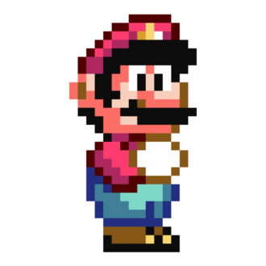
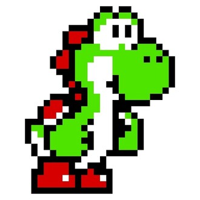
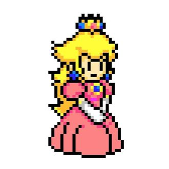
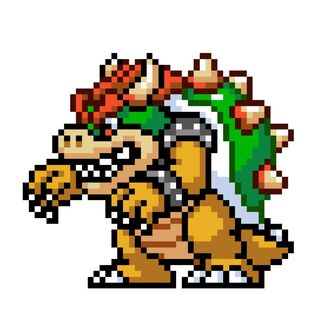
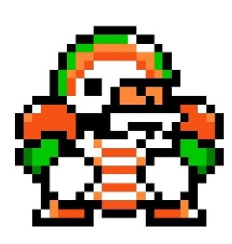
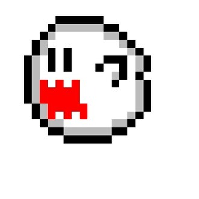

-
Mario Bros
Descrição do Personagem
Personagem principal da série. Tem um irmão chamado Luigi. Como mostra a série de desenho animado Super Mario Bros, Mario e Luigi chegam ao Reino Cogumelo como encanadores a serviço de consertar o encanamento de uma senhora quando veem Bowser atacando a princesa Peach e resolvem ajudá-la.
-
Yoshi
Descrição do Personagem
Yoshis são dinossauros que vivem na Ilha dos Yoshis. O Yoshi principal da série foi encontrado quando Luigi se perdeu de Mario e Peach na Terra dos Dinossauros e se deparou com um bloco que, quando quebrado, ao invés de cogumelos ou flores saírem dele, acabou aparecendo um ovo de Yoshi.
-
Princesa Peach
Descrição do Personagem
Princesa Peach é a princesa do Reino Cogumelo com uma variedade de servos. Entre eles, Toads, Koopas, Goombas, Shy Guys e vários outros. Seu mordomo, Toadsworth, tem com ela uma relação muito próxima. Ela é humana, assim como Mario e Luigi, sendo que no filme animado ela diz que sua lembrança mais antiga e de ter sido encontrada e adotada pelos Toads, que fizeram dela a princesa deles. É namorada do Mario.
-
Bowser
Descrição do Personagem
O Rei Bowser Koopa, conhecido no Japão como Koopa, é o principal vilão do universo Mario, consagrada franquia da Nintendo, e também um dos mais famosos vilões da empresa. Ele é o rei de todos os Koopas (uma espécie similar a tartarugas super desenvolvidas) e também o líder da organização criminosa conhecida como Koopa Troop, uma organização composta por diversas criaturas do Reino dos Koopas.
-
Chuck
Descrição do Personagem
Toni Trombada (do Inglês, Chargin' Chuck) são Koopas que usam um equipamento de futebol americano, mas também podem usar itens como bolas de beisebol e pás para atacar o jogador. São mais resistentes que os Koopas comuns, em Super Mario World Mario tem que pular 3x neles para os derrotar.
-
Boo
Descrição do Personagem
Boo é um inimigo-fantasma da série Mario, criado pela Nintendo, e que apareceu pela primeira vez em Super Mario Bros. 3 para NES.